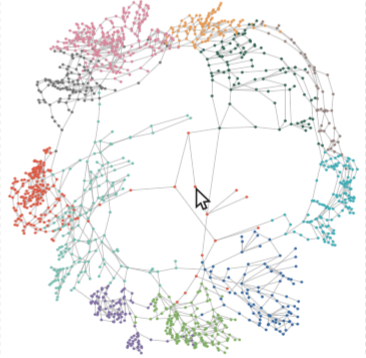

Structure-aware Fisheye Views for Efficient Large Graph Exploration
(opens in new tab)

Venue. TVCG (2018)
Materials.
DOI(opens in new tab)
PDF(opens in new tab)
supplemental(opens in new tab)
video(opens in new tab)
Abstract. Traditional fisheye views for exploring large graphs introduce substantial distortions that often lead to a decreased readability of paths and other interesting structures. To overcome these problems, we propose a framework for structure-aware fisheye views. Using edge orientations as constraints for graph layout optimization allows us not only to reduce spatial and temporal distortions during fisheye zooms, but also to improve the readability of the graph structure. Furthermore, the framework enables us to optimize fisheye lenses towards specific tasks and design a family of new lenses: polyfocal, cluster, and path lenses. A GPU implementation lets us process large graphs with up to 15,000 nodes at interactive rates. A comprehensive evaluation, a user study, and two case studies demonstrate that our structure-aware fisheye views improve layout readability and user performance.
Link to this page: